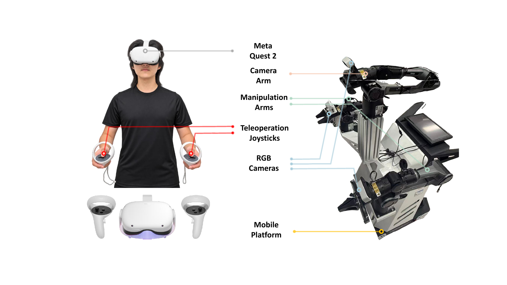

ActiveScale: Scaling Active Perception for Robots across Model, Data, and Hardware
Teaching robots to look.
A recipe across data, models, and hardware.
Why do robots need active perception?
A fixed camera can miss the evidence needed to act. Robots must change their viewpoint to reveal hidden details or search beyond their initial view.
Follow the robot’s viewpoint.
A recorded Pot demonstration: the robot’s motion and three camera views share one timeline.
How do we make robots actively look?
AMP combines two manipulation arms, an independent camera arm, and a mobile base. One operator coordinates the head and both hands.

One mobile base. Three arms.
We retain the Cobot Magic’s lower support and add a PiPER camera arm on a 300 mm mast.
How does one operator control AMP?
Head tracking guides the camera arm. Two Quest controllers guide the manipulation arms.
How can we learn from in-the-wild data?
How does the model learn to look?
Connect changing views to geometry and action, from human–robot mid-training to deployment.
Can robots solve tasks that require looking?
Two types of active perception. Five real-world tasks.
Does the extra design slow down inference?
Each new observation conditions the next action chunk while the robot executes the current one. Real-time chunking (RTC) keeps end-effector pose control continuous at 30 Hz. ActiveScale generates 264.5 actions/s on one RTX 4090.
Conclusion and limitations
A recipe for looking and acting.
ActiveScale combines camera-aware temporal modeling, human–robot mid-training, and AMP’s independent viewpoint control. Together, these connect changing observations to robot actions.
Across five real-world task families, mean success improves from 30% to 70% compared with directly post-trained π₀.₅.
What comes next?
Our evaluation covers five task families. The mobile demonstration shows single-operator teleoperation; broader autonomous mobile active-perception evaluation remains future work.
This study uses mid-training to learn from egocentric data. Next steps include larger and more diverse active-perception pretraining datasets and scaled AMP data collection.
Cite ActiveScale
@article{zhou2026activescale,
title = {ActiveScale: Scaling Active Perception for Robots across Model, Data, and Hardware},
author = {Zhou, Shuai and Pang, Kaisheng and Song, Wenxuan and Zhang, Wenjie and Zheng, Xinhu and Li, Haoang},
journal = {arXiv preprint arXiv:2609.18514},
year = {2026}
}